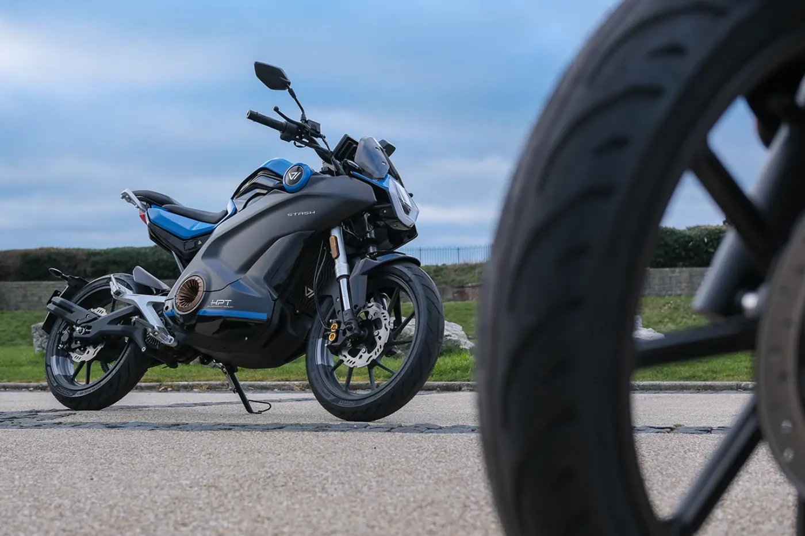
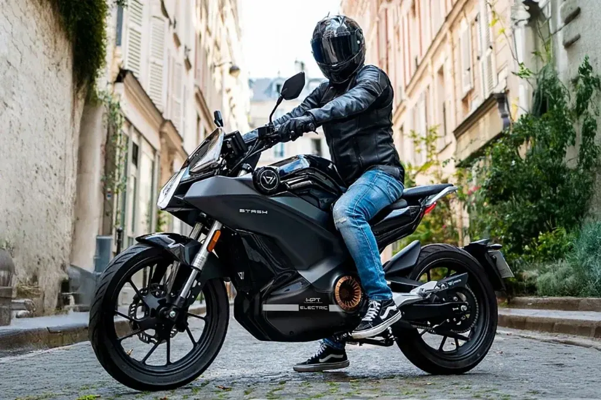
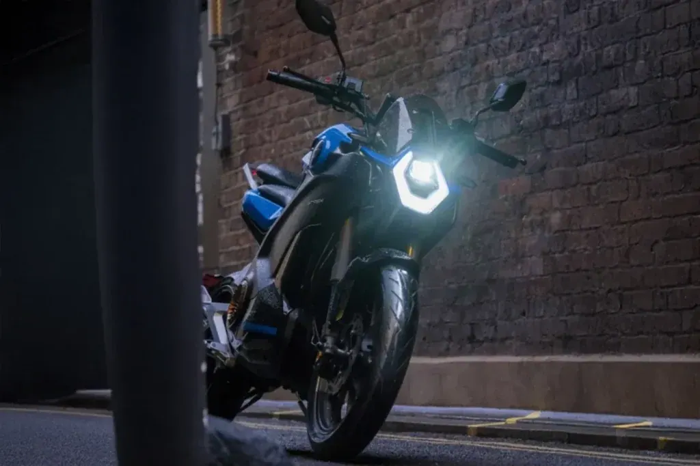
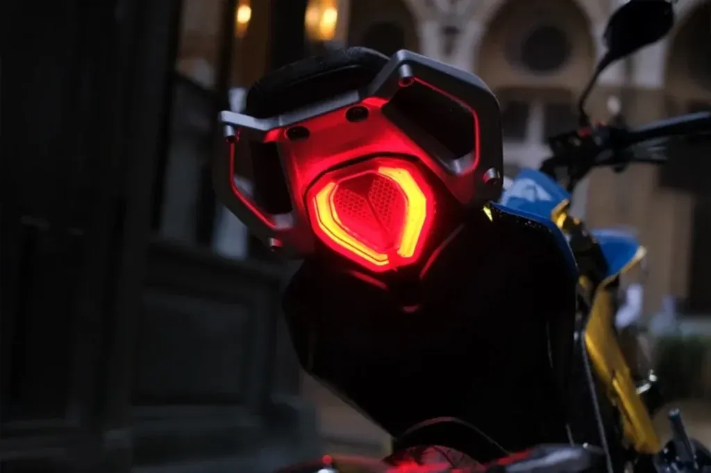
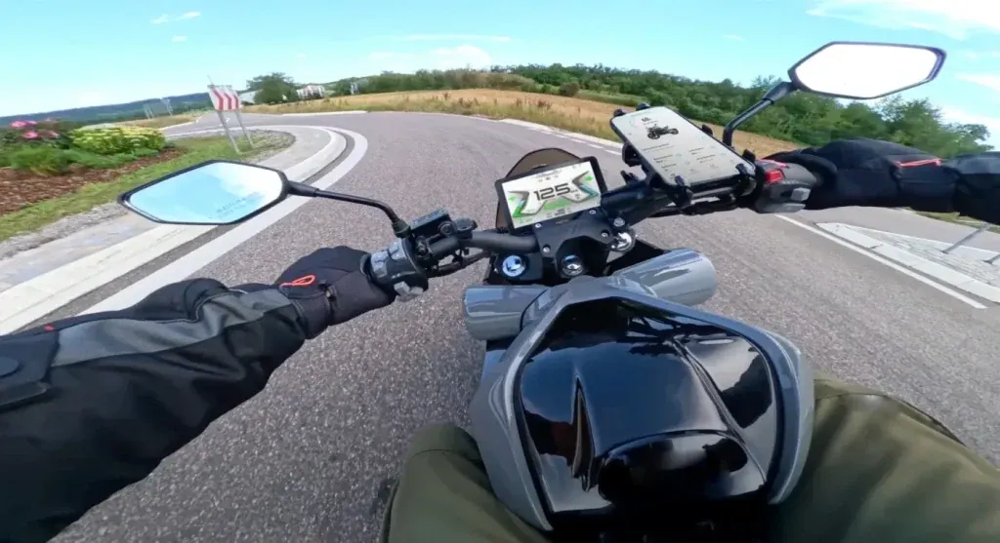

Vmoto
TC MAX
B·A1 Eléctrica · 3,2 kW · Deportivas
Propuesta de OpsPilot para Expomoto Córdoba, en revisión. No es la web oficial: expomotocordoba.es
Inicio › Motos › Vmoto › STASH

Vmoto
Cuando la elegancia encuentra la potencia…
Precio y financiación: te los damos al momento por teléfono (pendientes de publicar en la web).




Su doble carenado reduce la resistencia al aire, mejorando la estabilidad y la suavidad a alta velocidad. Más eficiencia, mejor control y una conducción más precisa en cada curva.
El sistema de iluminación LED garantiza máxima visibilidad en todo momento. El faro delantero ofrece una luz potente y uniforme, mientras que el piloto trasero mejora la visibilidad frente a otros vehículos, aumentando la seguridad en condiciones de baja luz.
Su batería de alta eficiencia ofrece hasta 180 km de autonomía** (a 45 km/h). Además, puedes cargarla fácilmente desde cualquier enchufe doméstico gracias a su práctico puerto de carga lateral. Sin instalaciones complicadas, sin límites.
Equipada con ABS Bosch de alto rendimiento, garantiza una frenada segura y estable. El sistema de control de tracción (TCS) optimiza el agarre, evitando deslizamientos y mejorando la estabilidad en cualquier condición.
Stash está diseñada para ofrecer una experiencia completa: cómoda en trayectos largos y emocionante cuando buscas sensaciones. Su ergonomía favorece una postura natural y relajada, reduciendo la fatiga sin perder agilidad ni control.
El resultado: una moto pensada para disfrutar durante horas, con precisión, confort y carácter.
| Motor | motor central con transmisión por cadena |
|---|---|
| Homologación | L3e-A1 (equivalente a 125cc) |
| Potencia nominal | 9.0 kW |
| Potencia máxima | 14.4 kW |
| Refrigeración | Aire |
| Velocidad máxima | 120 Km/h |
| Autonomía | 80 Km homologado 180 km a 45 km/h |
| Ángulo de pendiente superable | 27° |
| Modelo de batería | Batería ATL softcore |
| Nº de baterías | 1 fija |
| Capacidad por batería | 7,2 kWh (74V 97Ah) |
| Tiempos carga por batería y cargador disponible | 3 h con el cargador 72V35A (35300-QBH-A100) |
| Suspensión delantera | Invertida doble brazo hidráulico |
| Suspensión trasera | Mono amortiguador central hidráulico |
| Freno delantero | ABS |
| Freno trasero | ABS + TCS |
| Distancia entre ejes | 1400 mm |
| Peso orden de marcha con batería | 153 kg con batería fija |
| Largo x ancho x alto | 2030 mm*810 mm*1100mm |
| Peso máximo admisible (mmta) | 320 kg |
| Ocupantes | 2 |
| Colores | Azul, Gris, Negro |
Datos de la marca, tal como se publican en expomotocordoba.es.